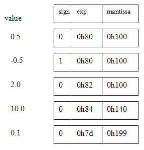

Full IEEE 754 floating point (FP) uses a lot of hardware resource on the FPGA. For parallel DSP it would be nice to have a simpler, narrow word FP. Some papers (Fang, et.al., Tong, et.al., Ehliar, et.al.) suggest that only 9 to 11 bits of mantissa is enough for video or audio encoding, as long as there is sufficient dynamic range supplied by the exponent. This page shows a possible implementation. The obsolete Altera documents fp_mult and fp_add_sub (see references) were useful.
A student (Skyler Schneider, 2010) built a similar system with 18 bits of mantissa.
His system is described below.
A student (Mark Eiding, 2015) modified the 18 bit system for faster inverse square root (for gravity calculations):
bit 26: Sign (0: pos, 1: neg)
bits[25:18]: Exponent (unsigned)
bits[17:0]: Fraction (unsigned)
(-1)^SIGN * 2^(EXP-127) * (1+.FRAC) -25.0
((-1)**1) * (1.100100000000000000) * (2**(131-127))
-1 * 1.5625 * 16
1 10000011 100100000000000000
0x60E4000 Simplified, 8-bit exponent and 9-bit mantissa, Floating point.
I decided to build a FP with 8-bit exponent and 9-bit mantissa (and with no NANs, infinities, denorms or rounding). The sum of the bit-lengths (plus one sign bit) means that the FP number fits into a 18-bit M4K block word on the CycloneII FPGA. The 9-bit mantissa means that only one hardware multiplier (out of 70) is used for the floating multiplier. The exponent is represented in 8-bit offset binary form. For example 20=128, 22=130, and 2-2=126. The mantissa is represented as a 9-bit fraction with a range of [0 to 1.0-2-9]. A sign bit of zero implies positive. The Verilog representation is {sign,exp[7:0],mantissa[8:0]}. Denormalized numbers are not permitted, so the high-order bit (binary value 0.5) is always one, unless the value of the FP number underflows, then it is zero. No error detection is performed and there is no rounding. There are no NANs, infinities, denorms, or other special cases (which make little sense in a realtime system anyway). Some example representations are shown below.

Five operations are necessary for floating DSP. They are add, negate, multiply, integer-to-float, and float-to-integer. Negate is easy, just toggle the sign bit. The integer conversion algorithms are necessary because the audio and video codecs are integer-based. Outlines for the functions are below. Finally, the modules were tested by building IIR filters. The SOS filters shown below validated the performance of the floating point. An article written for Circuit Cellar Magazine describing this floating point is available.
Multiply algorithm:
exp1+exp2-128 or exp1+exp2-129. If the sums of the input exponents is less than 129 then the exponent will underflow and the product is zero. (mantissa1)x(mantissa2) has the high order-bit set, the top 9-bits of the product are the output mantissa and the output exponent is exp1+exp2-128.(product)<<1 and the output exponent is exp1+exp2-129.(sign1)xor(sign2) 0.5<sum<2.0. If the result is greater than one, shift the mantissa sum right one bit and increment the exponent. The sign is the sign of either input.0.0<difference<0.5. Shift the mantissa left until the high bit is set, while decrementing the exponent. The sign is the sign of the bigger input.
The multiplier takes about 60 logic elements plus one hardware multiplier on the CycloneII FPGA, while the adder takes about 220 logic elements. The timing analyser suggests that the purely combinatiorial multiplier should be able to run at 50 MHz and the adder at 30 MHz or so.
The integer-to-FP and FP-to-integer conversion routines allow you to specify a signed scale. Going from integer to float, the resulting floating point number is (integer_input)*2scale_input. This feature allows you to convert numbers less than one. Going from float back to integer, you choose the scale you want to bring the floating point number back into a small integer range. The signed integer inputs and outputs are 10-bit, 2's complement format.
Integer to FP:
I assumed 10-bit, 2’s complement, integers since the mantissa is only 9 bits, but the process generalizes to more bits.
FP to integer:
Converting back to integer is similarly simple, but no overflow is detected, so scale carefully.
Testing the FP routines using IIR filtering by Second-order-sections (SOS)
SOS filters have the advantage (over straight multipole filters) of smaller dynamic range on coefficients, so the numerical stability is better. SOS filters are also more straight forward to do with floating point.
The downside is a few more state variables and a few more multiplies for each filter. A matlab program and function convert filter specifications to Verilog with 18-bit floating point. The top-level module defines filters of order 2, 4 and 6. The project is archived here.
Testing the FP routines using IIR filtering
The fpmult, fpadd, int2fp and fp2int routines were incorporated into the state machine filters described on the FPGA DSP page, example 4. The routines worked, implying that the logic is correct, however a 9-bit manitssa is apparently not accurate enough to implement high-order or narrow bandwidth filters. Second order filters work fine, but 4th and 6th order filters became inaccurate when the filter bandwidth was low. Use the SOS verions above for most actual filters. A matlab program (and associated function) were used to convert matlab-designed filter coefficients to floating point format. The top-level module defines three filters and connects them to the audio in/out. The entire project is zipped here.
FP reciprocal
The ability to take a reciprocal allows division to occur. Reciprocal was implemented Newton-Raphson interation on an initial linear estimate of the reciprocal. This design just tests for static correctness of the method by displaying values on the LEDs. The process is to take the input number, strip off the sign and exponent, compute the reciprocal of the remaining number between 0.5 and 1.0, form the new exponent as 0x81+(0x81-input_exponent) then merge together the input sign, new exponent and new mantissa from a Newton iteration process. The module will run at 14 MHz and uses 3 floating point adders and 4 floating point multipliers.
The algorithm (from http://en.wikipedia.org/wiki/Division_%28digital%29) is as follows, with all operations being floating arithmetic:
In_reduced={1'b0, 8'h80, m1} where m1 is the mantissa of the normalized input float. This operation
(with the sign set to + and the exponent set to 0x80), limits the range to 0.5 to 1.0.x0 = 2.9142 - 2*in_reduced ( 0.5<=in_reduced<=1.0) x1 = x0*(2-in_reduced*x0)x2 = x1*(2-in_reduced*x1)x2.=(in_reduced==9'b100000000)? 9'h102-e1 : 9'h101-e1
e1FP reciprocal Square Root
A
reciprocal square root function is useful when normalizing vectors (e.g. computer graphics) and con be converted to a square root with just one more multiply.
This design just tests for static correctness of the method by displaying values on the LEDs. The process is to take the input number, strip off the sign and exponent, compute the reciprocal square root of the remaining number between 0.25 and 1.0, form the new exponent, then merge together the new exponent and new mantissa from a Newton iteration process.
The module will run at 11 MHz and uses 3 floating point adders and 6 floating point multipliers.
The algorithm (from http://en.wikipedia.org/wiki/Methods_of_computing_square_roots) is as follows, with all operations being floating arithmetic. The x0 estimate is based on a linear approximation which I thought up.:
input_exp = (e1[0]==1)? 8'h7f : 8'h80 and
reduced_input = {1'b0, input_exp, m1} m1 is the mantissa of the normalized input float. This operation, limits the range to 0.25 to 1.0.x0 = 2.05 - reduced_input with (input 0.25<=reduced_input<=1.0)x1 = x0/2 * (3 - reduced_input*x0*x0) x2 = x1/2 * (3 - reduced_input*x1*x1)x2.
((m1==9'b100000000 && e1[0]==1) )? eout = 9'h82 + ((9'h80 - e1)>>1) : eout = 9'h81 + ((9'h80 - e1)>>1) e1 is the exponent of the normalized input float.8-bit exponent and 18-bit mantissa, Floating point (by Skyler Schneider, 2010)
Reg27 floating point
Bit #s Name Encode
27 s 1-bit sign (0 positive, 1 negative)
26:18 e 8-bit exponent (2's bit complement -128 to 127)
17:0 f 18-bit fraction (unsigned)
Value = ((-1)**s) * (0.f)_bin * (2**e)
** is exponentiation
_bin means a binary interpretation
Example: -1.25
((-1)**1) * (0.101000000000000000) * (2**1)
So the Reg27 floating point value is
1 00000001 101000000000000000
0x4068000
The top bit of f should always be 1 except when
the register stores the value 0, in which case
the entire 27-bit register should be 0.
The multiplier is single-cycle.
The adder takes two cycles and is buffered midway.
It can be pipelined (one add in first half of
adder while another add in second half).
The adder can be used to subtract by flipping the
sign bit of the inputs.
There is no overflow detection.
When underflow occurs, the output is 0.
Parameters used in the routines.
C routines for conversion:
#include ‹inttypes.h›
#include ‹math.h›
// Convert a 27-bit register floating point into a C floating point.
float reg27ToFloat(uint32_t r) {
uint32_t sign = (r & 0x04000000) >> 26;
int32_t exp = ((r & 0x03FC0000) << 6) >> 24;
if(exp > 127) exp -= 256;
uint32_t frac = (r & 0x0003FFFF);
float result = pow(2.0, (float) exp);
result = (((float)frac) / 262144.0) * result;
if(sign) result = result * (-1);
return result;
}
// Convert a C floating point into a 27-bit register floating point.
uint32_t floatToReg27(float f) {
uint32_t f_f = (*(int*)&f);
uint32_t f_sign = (f_f >> 31) & 0x1;
uint32_t f_exp = (f_f >> 23) & 0xFF;
uint32_t f_frac = f_f & 0x007FFFFF;
uint32_t r_sign;
uint32_t r_exp;
uint32_t r_frac;
r_sign = f_sign;
if((f_exp == 0x00) || (f_exp == 0xFF)) {
// 0x00 -> 0 or subnormal
// 0xFF -> infinity or NaN
r_exp = 0;
r_frac = 0;
} else {
r_exp = (f_exp - 126) & 0xFF;
r_frac = ((f_frac >> 6) | 0x00020000) & 0x0003FFFF;
}
return (r_sign << 26) | (r_exp << 18) | r_frac;
}
References
JO Hamblen, TS Hall and MD Furman, Rapid protoyping of digital systems: SOPC edition , Springer 2008
Fang Fang, Tsuhan Chen, Rob A. Rutenbar, Lightweight floating-point arithmetic: Case study of inverse discrete cosine transform, EURASIP J. Sig. Proc.; Special Issue on Applied Implementation of DSP and Communication Systems(2002)
Fang Fang, Tsuhan Chen, and Rob A. Rutenbar, FLOATING-POINT BIT-WIDTH OPTIMIZATION FOR LOW-POWER SIGNAL PROCESSING APPLICATIONS, http://amp.ece.cmu.edu/Publication/Fang/icassp02_Fang.pdf (2002)
Jonathan Ying Fai Tong, David Nagle, Rob. A. Rutenbar, Reducing power by optimizing the necessary precision/range of floating-point arithmetic, IEEE Transactions on Very Large Scale Integration (VLSI) Systems, Volume 8 , Issue 3 (2000) Special section on low-power electronics and design Pages: 273 - 285
Eilert, J. Ehliar, A. Dake Liu, Using low precision floating point numbers to reduce memory cost for MP3 decoding, IEEE 6th Workshop on Multimedia Signal Processing, 2004 : 29 Sept.-1 Oct. 2004 page(s): 119- 122
Altera Corp, fp_mult: Floating point multiplier, http://www.altera.com/literature/fs/fsmul_01.pdf, A-FS-04-01 1996
Altera Corp, fp_add_sub: Floating point adder/subtractor , A_FS-02-01, 1996
History:
20=128, 22=130, and 2-2=126. The mantissa is represented as a 9-bit fraction with a range of [0 to 1.0-2-9]. A sign bit of zero implies positive. The Verilog representation is {sign,exp[7:0],mantissa[8:0]}.exp1+exp2-128 or exp1+exp2-129. If the sums of the input exponents is less than 129 then the exponent will underflow and the product is zero. (mantissa1)x(mantissa2) has the high order-bit set, the top 9-bits of the product are the output mantissa and the output exponent is exp1+exp2-128.(product)<<1 and the output exponent is exp1+exp2-129.(sign1)xor(sign2) 0.5<sum<2.0. If the result is greater than one, shift the mantissa sum right one bit and increment the exponent. The sign is the sign of either input.0.0<difference<0.5. Shift the mantissa left until the high bit is set, while decrementing the exponent. The sign is the sign of the bigger input.fp2int which is corrected in the version below.
fpmult, fpadd, int2fp and fp2int routines were incorporated into the state machine filters
described on the FPGA DSP page, example 4.
The routines worked, implying that the logic is correct, however a 9-bit manitssa is apparently not accurate enough to implement high-order or narrow bandwidth filters.
Second order filters work fine, 4th and 6th order filters became inaccurate when the filter bandwidth was low.
A matlab program (and associated function) were used to convert matlab-designed filter coefficients to floating point format. The top-level module defines three filters and connects them to the audio in/out. The entire project is zipped here.
Copyright Cornell University, March 9, 2017